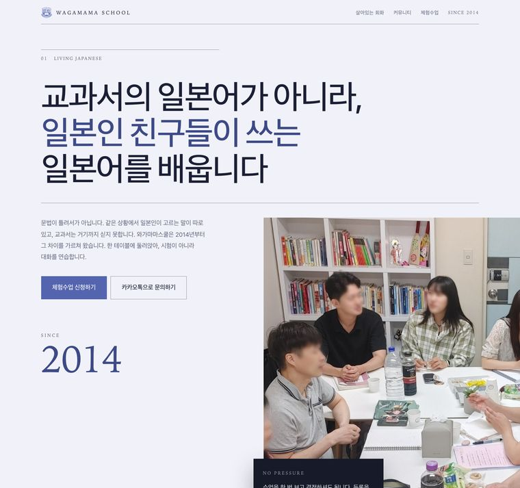
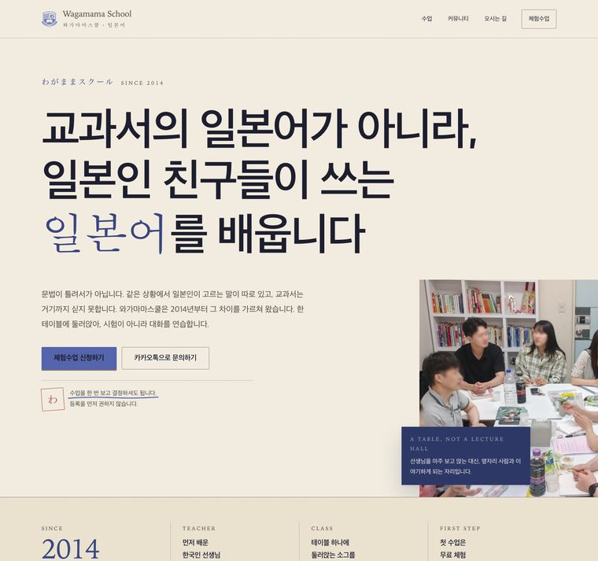
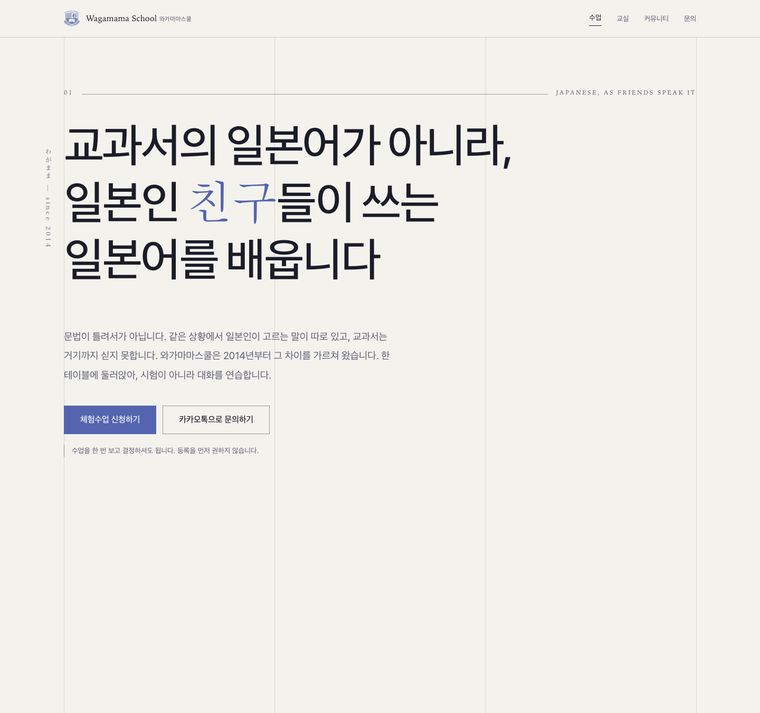
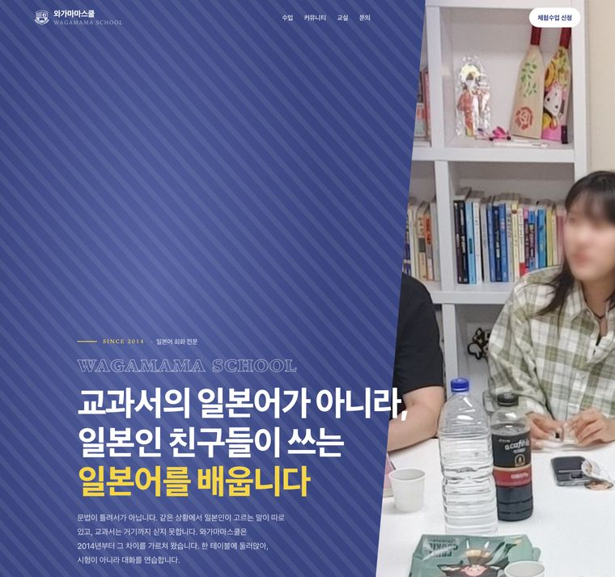

홈페이지에 원장님의 생각을 담기 위한 첫 질문입니다. 지금 올라가 있는 문구는 제가 형태만 잡아 둔 것이라, 원장님 말씀으로 바꿔야 진짜 홈페이지가 됩니다.
※ 특히 2번(교과서와 실제 일본어의 차이)이 가장 중요합니다. 이 학원의 핵심이라 홈페이지에서 가장 크게 다룰 부분입니다.
홈페이지 첫 화면과 소개 글의 바탕이 됩니다.
이 학원의 핵심이자, 홈페이지에서 가장 크게 다룰 부분입니다.
다른 학원에 없는 부분이라 홈페이지에서 크게 다루려 합니다.
홈페이지를 볼 사람이 “나 같은 사람이 다니는 곳이구나”를 알게 하는 부분입니다.
지금 홈페이지에 제가 추측으로 적어 둔 것들입니다. 틀린 게 있으면 알려주세요.
내용(문구·사진)은 네 개가 전부 똑같습니다. 보이는 방식만 다릅니다. 마음에 드는 것을 골라주시면 그 방향으로 다듬겠습니다. 「전체 보기」를 누르면 실제 화면을 끝까지 내려 보실 수 있습니다.
※ 지금 홈페이지는 ②번 방향으로 올라가 있습니다. 다른 게 나으시면 알려주세요 — 바꿀 수 있습니다.
네 가지 방향을 만들어 봤습니다. 내용은 전부 같고 보이는 방식만 다릅니다.

눌러서 전체 보기큰 글씨와 가는 선으로 정갈하게. 사진이 화면 오른쪽 끝까지 시원하게 잘려 나갑니다.
정갈하고 차분함 · 다소 차가울 수 있음

눌러서 전체 보기미색 종이에 인쇄한 느낌. 「일본어」 한 구절만 붓글씨체로 바꾸고 낙관 도장을 찍었습니다.
따뜻하고 일본스러움 · 현재 적용 중

눌러서 전체 보기가는 세로선 격자를 깔고, 일본어를 세로로 세워 문장 길이 차이를 눈으로 보이게 했습니다.
정밀하고 격이 있음 · 다소 금욕적

눌러서 전체 보기학원 로고 색(남보라)으로 화면을 크게 채웁니다. 가장 눈에 띄고 또렷합니다.
강하고 현대적 · 사진이 색에 가려질 수 있음